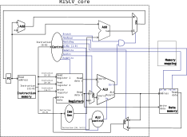
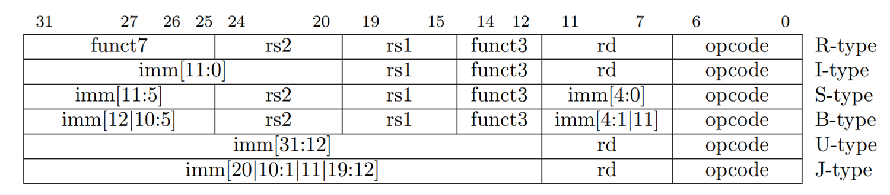
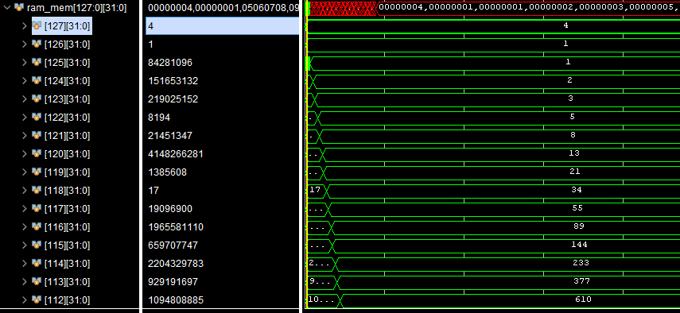

In this practice session we will implement the simple processor which we have seen in the corresponding theory session. Such processor is derived from the descriptions on the Patterson and Hennesy “Computer Organization and Design, RISC-V edition” Chapter 4.[1-4].
Such processor provides support for the following RISC-V instructions LW,SW,BEQ,ADD,SUB,AND,OR.
The tentative pipeline of the presented processor is shown in the below image, take your time to understand the different components and their interconnections:

Functional units
In this practice session we will work with a system verilog representation of the processor pictured above. The baseline code for this processor can be downloaded in poliformat.
Instruction memory
Takes in a read address corresponding to the PC and returns an instruction. It is also referenced as the processor ROM. In this processor representation, instruction memory is read asynchronously with the PC address. Memory is word/aligned as this simple processor does not support compressed instructions
Register unit
Takes in the following Inputs:
- Read register 1: Corresponds to the address of the first register to read
- Read register 2: Corresponds to the address of the second register to read
- Write register: Corresponds to the address of the register on which to write the instruction result
- Write data: Corresponds to the data to write to the Write register register address
- RegWrite: Control signal that signals if write data should be written into the write register Produces the following Outputs:
- Read data 1: Data corresponding to read register 1
- Read data 2: Data corresponding to read register 2
ALU
The ALU (Arithmetic and Logic Unit) is a functional unit dedicated to performing mathematical operations. It supports several mathematical operations in a full RISC-V processor. In this specific implementation it supports the following mathematical operations between it’s two input operands: AND, OR,ADD,SUBSTRACT
It takes the following Inputs:
- Source 1: First data source
- Source 2: Second data source
- Op: Codifies the operation that the ALU should perform between Source 1 and 2 operands And produces the following Outputs:
- ALU result: Result of the operation of the ALU
- Zero: Set to one if ALU result is zero
The Op field determines the operation that the ALU should perform with the following codification:
| Op field | ALU operation |
|---|---|
| 0000 | AND |
| 0001 | OR |
| 0010 | add |
| 0110 | substract |
Data memory
Stores program variables. Is also referred as the program RAM. It is accessed when the processor issues a load (read memory) or a store (write into memory) instruction. It presents the following Inputs:
- Address: Corresponds to the byte-aligned address to read/write from
- Write data: Corresponds to the data to write into memory
- wr_en: If set to one, the data in the Write data port is written into the memory Address
- rd_en: If set to one the data in Address is read to the output Read data It presents the following Outputs:
- Read data: Corresponds to the data present in input Address
The control unit
Takes in an instruction and generates control information for routing data and orchestrating the different processor units. Produces the following Outputs:
- Branch: Set to one when instruction produces a branch
- MemRead: Set to one when instruction dictates that ram should be read
- MemToReg: Set to one when register write data input should be the one read from memory
- ALUOp: Transmits Instruction field codified operations into the ALUControl unit for determining the operation that the ALU should execute
- MemWrite: Tells the data memory when to write the data in its write data input port to its write address memory address.
- ALUSrc: Tells the ALU which source operand should its second operand take (an immediate or a register-saved input operand)
- RegWrite: Tells the register file whether to write the data in its Write data port into its Write address register address.
ALUcontrol unit
We can generate the 4-bit ALU control input using a small control unit that has as inputs the funct7 and funct3 fields of the instruction and a 2-bit control field, which we call ALUOp. ALUOp indicates whether the operation to be performed should be add (00) for loads and stores, subtract and test if zero (01) for beq, or be determined by the operation encoded in the funct7 and funct3 fields (10). This behavior is encoded in the following table:
| ALUOp | Operation |
|---|---|
| 00 | Add |
| 01 | Sub |
| 10 | Determined by funct3 and funct7 |
Full ALUControl unit behaviour is defined in Exercise 2.
Exercises
Exercise 1. Generate the Control signals of the processor
Take the description of the control unit presented in the previous section and define it’s outputs from the four different instruction opcodes: R-format, LW, SW, BEQ. Take the instruction opcodes from Table 19.3 of The RISC-V spec .The ALUOp output is defined in the ALUcontrol unit
Fill the following table, create a snapshot of it and present it as exercise1.png in poliformat. If in doubt ask the professor, this step is crucial in the design of your processor.
| Input/output | Signal name | R-format | LW | SW | BEQ |
|---|---|---|---|---|---|
| Inputs | Inst[6] | ||||
| Inst[5] | |||||
| Inst[4] | |||||
| Inst[3] | |||||
| Inst[2] | |||||
| Inst[1] | |||||
| Inst[0] | |||||
| Outputs | ALUSrc | ||||
| MemtoReg | |||||
| RegWrite | |||||
| MemRead | |||||
| MemWrite | |||||
| Branch | |||||
| ALUOp [1:0] |
Exercise 2. Generate the ALUControl output signals
Fill the following table of the output ALU action from the ALUOp, Funct7 and Funct3 fields. An example of a valid ALU action is add, sub, and, or… with the corresponding ALU control output from the ALU description in ALU. Create a capture of the following table with the missing fields full and attach it in poliformat in a file named exercise2.png
| Inst Opcode | ALUOp | Operation | Funct7 | Funct3 | ALU action | ALU control output |
|---|---|---|---|---|---|---|
| lw | 00 | lw | x | x | ||
| sw | 00 | sw | x | x | ||
| beq | 01 | beq | x | x | ||
| R-type | 10 | add | ||||
| R-type | 10 | sub | ||||
| R-type | 10 | and | ||||
| R-type | 10 | or |
Exercise 3. Implementing the control module
Open the Vivado project provided from poliformat. With the Vivado GUI open the Control module located in the file Control.sv and implement the logic so that outputs are driven as described in Exercise 1. Generate the Control signals of the processor
Exercise 4. Implementing the ALU control module
Implement the ALUControl module located in the alu_control.sv file so that outputs are driven as described in Exercise 2. Generate the ALUControl output signals
Exercise 5. Implementing the ALU module
Implement the ALU module located in the ph_alu.sv file so that it follows the behavior described in ALU l
Exercise 6. Implementing the immediate generator
The immediate generator (located in file imm.sv) generates immediates using the instruction type and immediate fields to generate 32-bit integers.

Each immediate instruction type has different related opcodes and immediate values codified in different bit fields. The immediate generator must generate a full 32-bit integer from the immediate field. Fill the immediate generator system verilog code so that it generates immediates for the load and store instructions.Testing the processor
Validate your implementations by running the provided testbench. This testbench prints the fibonacci succession in the processor ram by executing the following code:
.data
initial_value: .word 1
final_value: .space 100
# t0 -> first fibonacci value
# t1 -> second fibonacci value
# a0 -> store address
# a1 -> 4, incrementing storage value
.text
add a0, zero, zero # a0 = 0
lw a1, 0(zero) # a1 = 4
add t0, zero, zero # t0 = 0
lw t1, 4(zero) # t1 = 1
loop:
sw t0, 0(a0) #store t0
add a0, a0, a1 #next address, we don't have immediate support so we use a register with a 4-value stored
sw t1, 0(a0) #store t1
add a0, a0, a1 #next address
add t0, t0, t1 #fibo1 value
add t1, t0, t1 #fibo2 value
beq zero, zero, loop #While true
As our processor follows the Hardvard architecture , where instructions are stored in a separate memory than data they share addresses. In such a way, address 0 will refer to the first instruction * (lw a0, 0(zero)) * when accessing the data memory and to the first data (1) when accessing the ram. Traditional computer processors use the von Newmann architecture where data and instructions are stored in a single memory. Thus, this program accesses the first memory value by using the pseudo-immediate register zero, in the first load. The result of a successful execution is proven by the following values in the processor ram:
